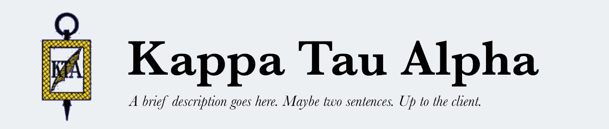

Search

Contact
Kappa Tau Alpha is an honorary society at journalism schools across the country. The society accepts students who graduate in the top ten percent of their classses.
Kappa Tau Alpha members at the University of Missouri celebrate on graduation day.
Content copyright © 2017 Sarah Sabatke, Rayna Sims, Adrienne Luther, Shuya Zheng, Sarah Przybyla, Eden Howell.